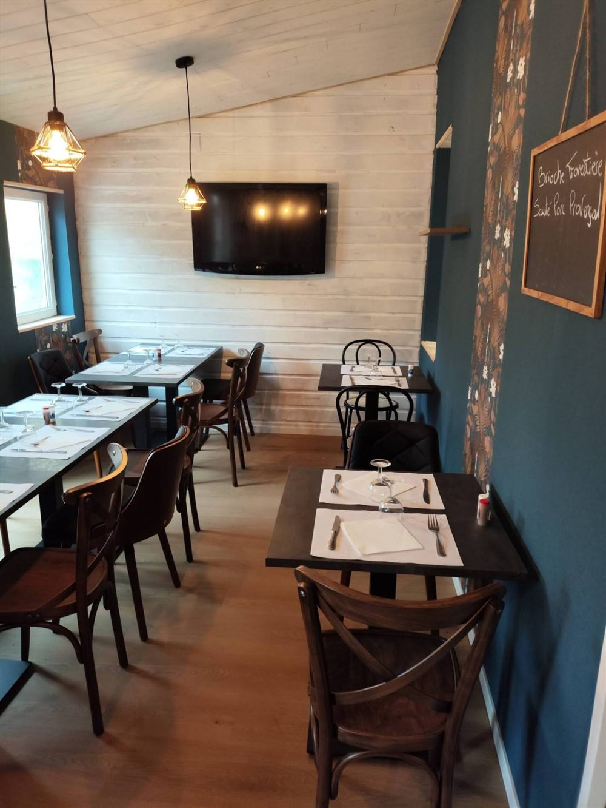
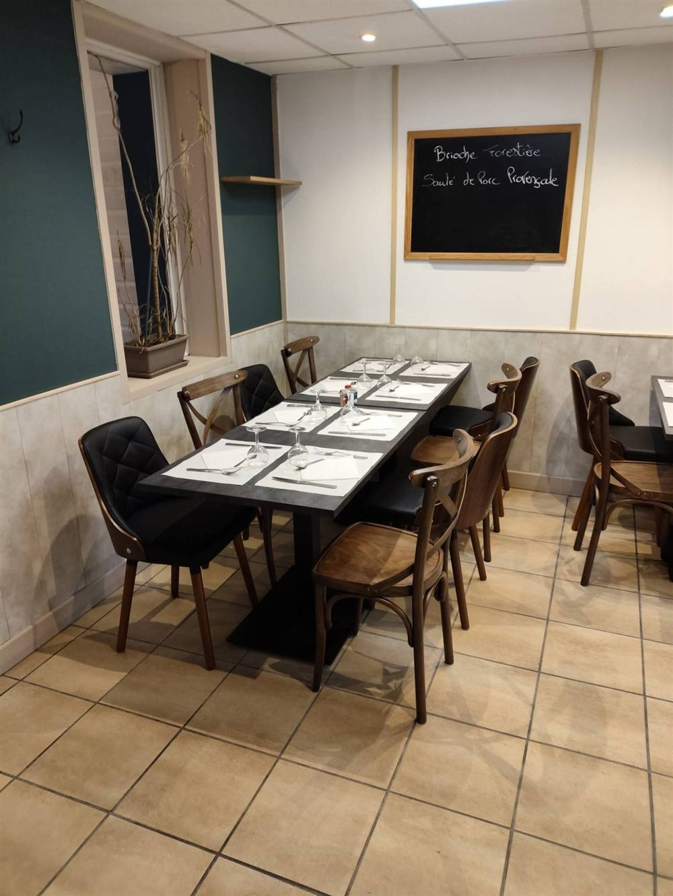
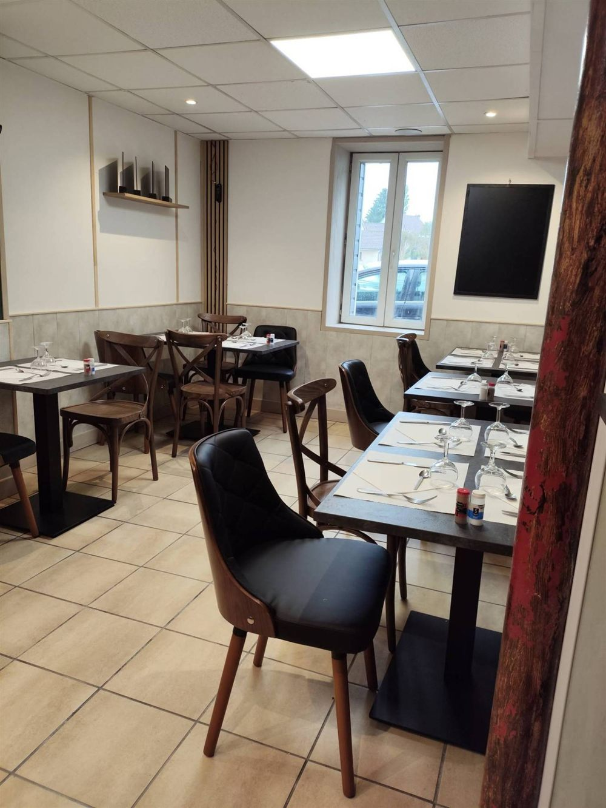
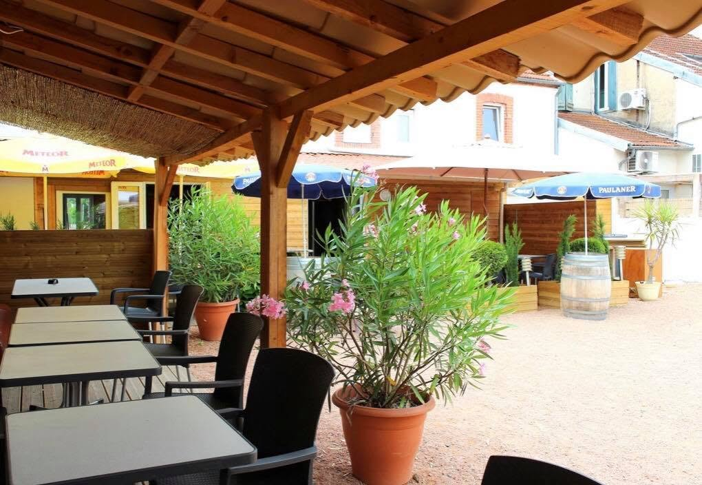
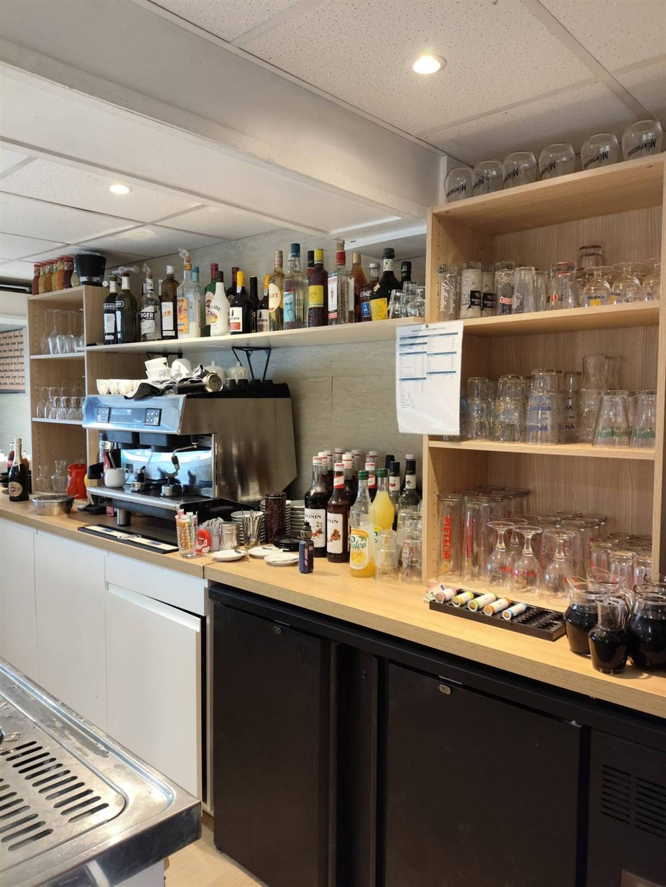
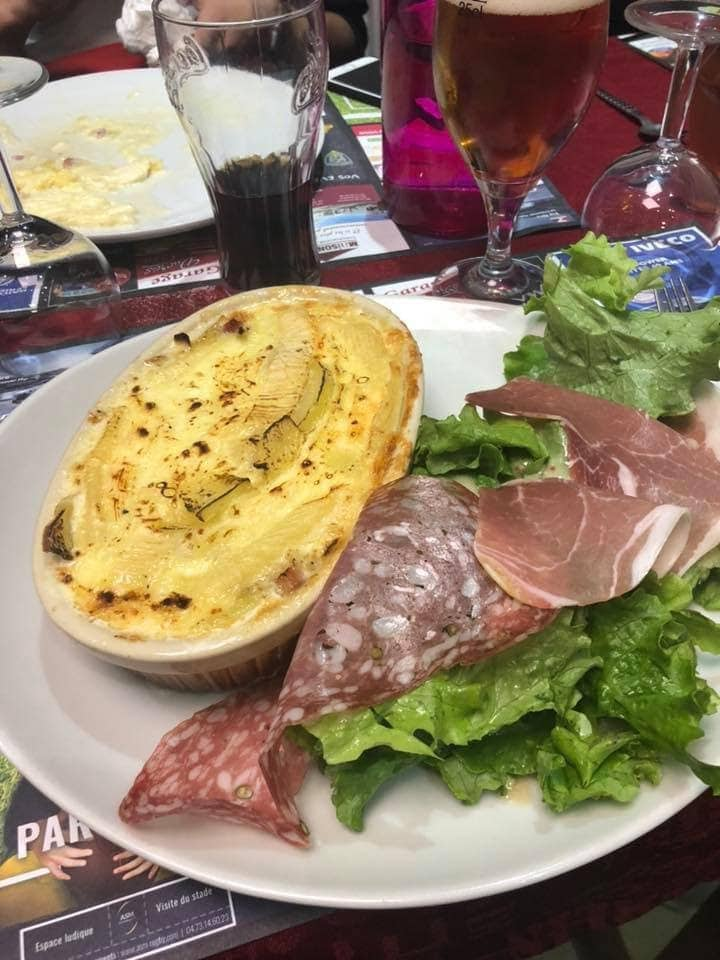
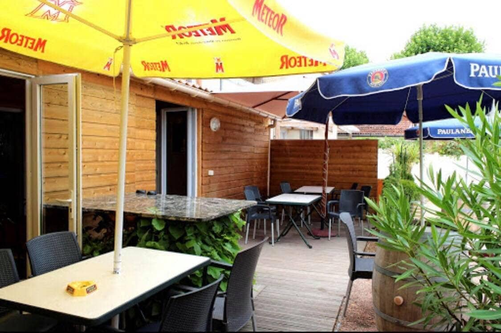

Café de la Paix
Café de la Paix — Restaurant ouvrier
à Bellerive-sur-Allier
Cuisine maison, service rapide et prix honnêtes. Le midi du lundi au samedi, et le vendredi soir pour le menu du week-end.

Formule du midi
18 €
tout compris
Bienvenue
Ici, on mange bien
et on ne traîne pas.
Artisans, gars du chantier, employés du coin ou habitués du quartier : au Café de la Paix, tout le monde est à la même table. Une cuisine de ménage préparée chaque matin, une assiette qui tient au corps et un service qui respecte votre pause déjeuner.
- Fait maisonPlats mijotés, purée maison, desserts du jour.
- Formule complèteEntrée, plat, fromage ou dessert, café et ¼ de vin.
- Deux salles et une terrasseUne salle claire côté rue, une salle cosy et une terrasse au calme.

le week-end
Vendredi soir
& samedi midi
La semaine est finie, le café change d'ambiance. Le vendredi soir et le samedi midi, on vous sert une petite carte du week-end : des pièces de bœuf, du poisson, des garnitures maison. Et certains vendredis, une soirée spéciale pour finir la semaine entre collègues ou entre amis.
Soirée spéciale
Les places partent vite : pensez à réserver.
Réserver ma tablededans comme dehors
La salle, le bar et la terrasse
Une salle claire côté rue, une seconde salle plus intime aux murs bleu nuit, le comptoir pour le café du matin, et derrière le café une grande terrasse abritée de la rue, à l'ombre de la pergola.





Infos pratiques
Horaires
Groupes et équipes
Repas d'équipe, fin de chantier, anniversaire du vendredi soir : appelez-nous la veille, on s'organise.